# First, clean the environment:
rm(list = ls())
# Now load packages:
# install.packages("groundhog")
library("groundhog")
groundhog.library(pkg = c("data.table", "MASS", "crayon",
"tmvtnorm", "metafor",
"parallel", "foreach", "doSNOW",
"ggplot2", "patchwork", "scico"),
date = "2025-04-15")Introduction to SAFE
A step by step online tutorial
Introduction
If you have any questions, errors or bug reports, please feel free to contact Erick Lundgren (erick.lundgren@gmail.com).
To run the code interactively (instead of just reading this lovely tutorial), do the following:
- Clone the github repo: https://github.com/ejlundgren/SAFE.git
- Run the code chunks in the SAFE simulations tutorial.qmd while in the R project session or just follow along here on the web
Load libraries
The groundhog package ensures that the library versions you use are the same as ours. You will need R version 4.5.0. Be sure to install groundhog if it is not already installed with install.packages().
An introduction to SAFE bootstrapping
SAFE bootstrapping is an incredible, seemingly magical, technique to calculate bias-corrected point estimates and sampling variance for effect sizes for use in meta-analyses. SAFE bootstrapping is particularly useful for novel effect sizes for which sampling variance formulas may not be known. In some cases, it is also more unbiased than traditional plugin formulas for variance and point estimates.
How does it work?
With SAFE bootstrapping, one draws a vector (or cloud) of hyperparameters of all variables used in an effect size formula. You then apply your effect size formula to this vector The variance of this transformed cloud is the sampling variance of your effect size!
You can then calculate a bias-transformed point estimate by taking the mean of this transformed cloud and subtracting it from 2 times the point estimate derived from the original variables.
Let’s demonstrate.
Imagine you’re conducting a meta-analysis of animal responses to a stressor. Many studies are reporting data as mean ‘latency time’ (e.g., time until an animal runs). However, you want to create an effect size of ‘speed’ from latency time. This is simple: take the inverse of latency (1/latency). Here let’s start with three mean latency times and convert to our new ‘speed’ effect size.
# The type of data summaries you might extract for a meta-analysis:
mean_latency <- c(15, 30, 21)
n <- c(25, 31, 50)
sd <- c(4.6, 3.1, 2.5)
# New effect size:
1/mean_latency[1] 0.06666667 0.03333333 0.04761905The effect size is trivial to calculate. But what is the sampling variance of this effect size, given that each of these measurements was associated with measurement sample size and standard deviation?
You could use calculus to derive a first-order sampling variance formula. Or you could use SAFE bootstrapping.
Step 1: Draw hyperparameters.
If the word ‘hyperparameter’ is scary, what we mean is a distribution associated with the variables in our effect size formula, in this case mean latency.
This is different than drawing from a population based on mean and standard deviation, which will have a broad distribution, reflecting the underlying population. Instead, we’re interested in drawing a distribution of the means—the hyperparameter of our effect size of interest. To do this, we draw from a normal distribution with standard error of the mean to describe dispersion.
To convert our ‘latency’ time to our ‘speed’ effect size with SAFE, let’s draw 1,000,000 samples of the mean latency hyperparameter from a normal distribution, with standard error as our sd. To avoid using lapply or loops, we’ll just do this on a single latency time and associated standard deviation and sample size. Note that we will do this for just one of our speed effect sizes (i.e., 1 mean, sd, and n)
# Set seed for reproducibility
set.seed(2025)
# Define the variables
x <- 15 # The mean latency time
sd <- 4.6 # standard deviation of latency time
n <- 25 # sample size, e.g., number of animals in the experiment
# Simulate a vector of hyperparameters (or cloud)
cloud <- rnorm(1e6, # number of samples
mean = x, # mean latency time
sd = sd / sqrt(n)) # standard error
# Let's have a look at the hyperparameter cloud
head(cloud)[1] 15.57110 15.03279 15.71130 16.17069 15.34130 14.85017hist(cloud)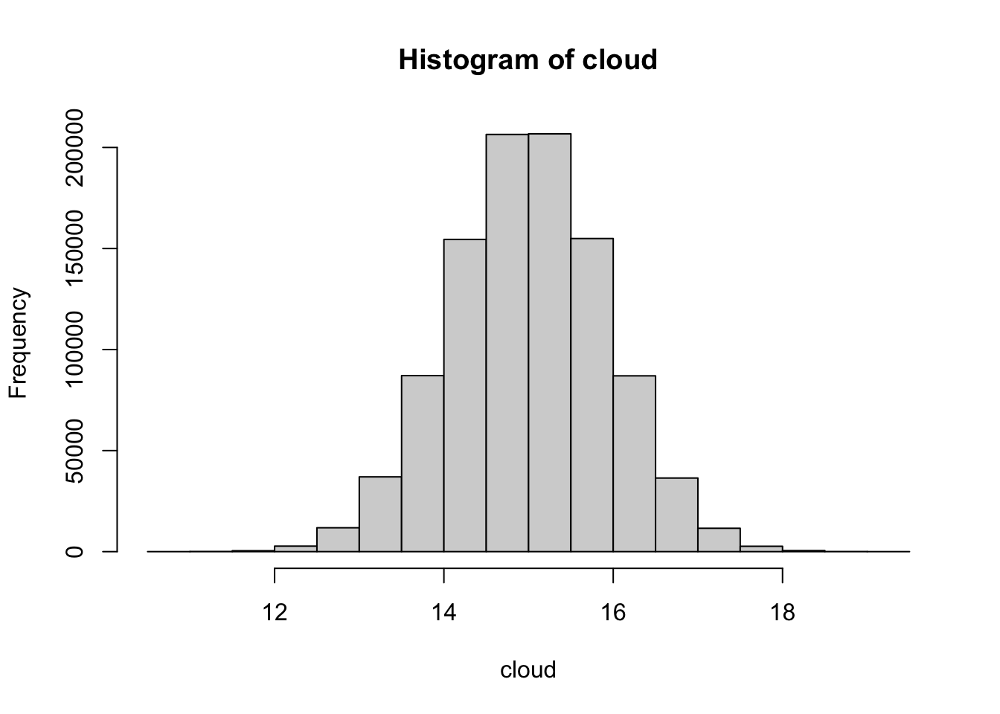
Step 2: Transform hyperparameters to target effect size
Now, let’s transform this cloud of hyperparameters to ‘speed’ with our ‘plugin’ or definition formula 1/x. Note that when we write ‘plugin’, we mean using a formula to calculate effect sizes or sampling variance.
These transformed values are centered on our original effect size, which we’ll overlay in red
# Transform the cloud to our effect size
cloud_trans <- 1/cloud
# Calculate the 'plugin' effect size from the definition formula
x <- 15
plugin_effect_size <- 1/x
plugin_effect_size[1] 0.06666667# Compare plugin effect size to transformed cloud of hyperparameters:
hist(cloud_trans, main = "Transformed hyperparameter cloud")
abline(v = plugin_effect_size, col = "red")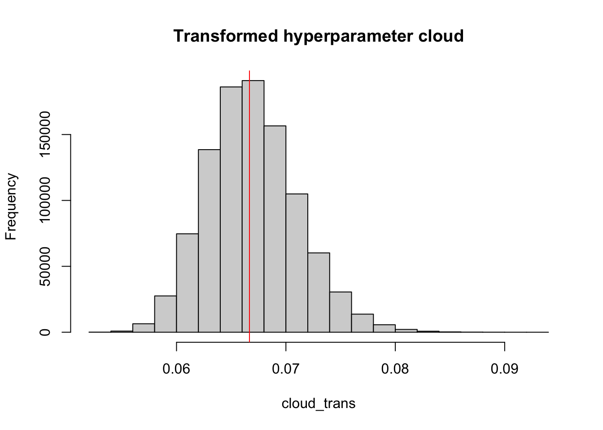
Step 3: Calculate sampling variance
To calculate sampling variance, we’ll simply calculate the variance of this transformed hyperparameter cloud.
safe_vi <- var(cloud_trans)
safe_vi[1] 1.720635e-05Voila! Sampling variance for a novel effect size. Pretty magical right?
Step 4: Calculate the bias-corrected effect size
Given small sample sizes for some measurements, and the knowledge that point estimates can be biased at low N, let’s also calculate a bias-corrected point estimate from this cloud of hyperparameters. We’ll introduce the formulas again here to build some of the logic about how we arrive at the 2*plugin - mean(cloud) formula you see in the code chunk below.
Recall that bias is measuring how different the bootstrapped estimate is from the plugin estimate. Essentially, we know the bootstrap sample is biased with small sample sizes, so what we want to do is measure how different the plugin effect size is from the bootstrap sample mean ((eqn-bias?)):
\[ \widehat{\text{bias}} = \bar{\theta}^* - \hat{\theta}_{\text{plugin}} \tag{1}\]
Where, \(\bar{\theta}^*\) is the average of the bootstrapped estimates and \(\hat{\theta}_{\text{plugin}}\) is the plugin value. If the bootstrapped estimate is larger than the plugin estimate, then the plugin estimate is biased low, and we need to push it up. If the bootstrapped estimate is smaller than the plugin estimate, then the plugin estimate is biased high, and we need to push it down. Bias corrected estimates just subtract this bias to correct the point estimate. In other words, the adjustment needed depends on the magnitude of difference and sign of the bias. We can substitute the bias into the following formula for bias-corrected estimate ((eqn-bc?)):
\[ \hat{\theta}_{\text{bc}} = \hat{\theta}_{\text{plugin}} - \widehat{\text{bias}} = \hat{\theta}_{\text{plugin}} - \big(\bar{\theta}^* - \hat{\theta}_{\text{plugin}}\big). \tag{2}\]
Rearranging this gives us:
\[ \hat{\theta}_{\text{bc}} = 2 \hat{\theta}_{\text{plugin}} - \bar{\theta}^* \]
You will notice that this is the same equation we use in the code chunk below.
safe_yi <- (2 * plugin_effect_size) - mean(cloud_trans)
safe_yi[1] 0.06641164We can now compare our plugin effect size to our SAFE effect size:
plugin_effect_size[1] 0.06666667So similar! And potentially less biased. We’ll find out later, where we report the results of Monte Carlo simulations that compare the bias of estimates from SAFE to estimates from just plugging into formulas. But first, let’s use SAFE to calculate variance for a more realistic custom effect size.
Q10 Temperature Coefficient
Our speed example above is very simple. How would one use SAFE to calculate bias-corrected point estimates and variance for a more scientifically interesting and challenging effect size? Let’s take a look at the temperature coefficient Q10. Q10 is a widely used measure of temperature sensitivity of chemical reactions or biological processes. Q10 compares the rate of a process between 2 temperature treatment groups. The formula for Q10 is:
\[ Q_{\text10} = (R_{\text2} / R_{\text{1}})^{10/(T_{\text2}-T_{\text1})} \tag{3}\]
Where R is the rate of some biological or chemical process for treatment groups 1 and 2 and T is the temperatures of groups 1 and 2.
If one wanted to conduct a meta-analysis on studies reporting Q10 data, along with sample size and standard deviation for each mean R, how would you calculate sampling variance? One could derive sampling variance using the delta method but this is outside many people’s mathematical comfort zone and it’s not clear how one would evaluate whether the derived sampling variance is accurate or not.
For example, Havird et al. (2020), conducted an influential meta-analysis using Q10 on passive versus active thermal acclimation among a diversity of aquatic and terrestrial taxa and used the delta method to derive sampling variance.
Let’s see if we can use SAFE to calculate sampling variance for Q10 type data. We will use a fake dataset, reflecting what a meta-analyst might extract from the literature.
dat <- fread("data/Q10_fake_data.csv")
dat Reference_ID Obs_ID R1_mean R1_SD R1_N R2_mean R2_SD R2_N T1 T2
<int> <int> <int> <num> <int> <int> <num> <int> <int> <int>
1: 1 1 13 2.1 15 18 3.1 15 10 15
2: 1 2 10 1.5 15 16 2.5 15 10 15
3: 2 3 4 0.3 25 6 0.7 25 15 25
4: 2 4 8 0.5 25 12 0.6 25 15 25
5: 2 5 5 0.4 25 7 0.3 25 15 25This dataset has IDs for the references and observation IDs (Reference_ID and Obs_ID) as well as means, standard deviations, and sample sizes for R1 and R2 (R1_mean, R2_mean, R1_SD, R2_SD, R1_N, R2_N) and the two temperature treatments (T1, T2).
First, let’s encapsulate the Q10 plugin formula in a function and then calculate Q10 point estimates (effect sizes) for each row of our fake data.
Q10 <- function(R1, R2, T1, T2){
res <- (R2 / R1) ^ (10 / (T2 - T1))
}
dat$yi_plugin <- Q10(R1 = dat$R1_mean,
R2 = dat$R2_mean,
T1 = dat$T1,
T2 = dat$T2)
dat Reference_ID Obs_ID R1_mean R1_SD R1_N R2_mean R2_SD R2_N T1 T2
<int> <int> <int> <num> <int> <int> <num> <int> <int> <int>
1: 1 1 13 2.1 15 18 3.1 15 10 15
2: 1 2 10 1.5 15 16 2.5 15 10 15
3: 2 3 4 0.3 25 6 0.7 25 15 25
4: 2 4 8 0.5 25 12 0.6 25 15 25
5: 2 5 5 0.4 25 7 0.3 25 15 25
yi_plugin
<num>
1: 1.91716
2: 2.56000
3: 1.50000
4: 1.50000
5: 1.40000Calculate sampling variance for Q10
Now, let’s use SAFE to calculate bias corrected point estimates and sampling variances. To do this, we will draw hyperparameter clouds for R1 and R2 based on mean R and standard error (SD/sqrt(N)), transform these clouds with our Q10 function, calculate sampling variance of this transformed cloud, and then calculate our bias-corrected point estimates.
This has to be done separately for each row in our dataset. To make the code more readable, we’ll do this in a for loop (though parallel approaches or lapply would likely be faster).
res <- list()
for(i in 1:nrow(dat)){
# Create clouds of hyperparameters
R1_cloud <- rnorm(n = 1e6,
mean = dat[i, ]$R1_mean,
sd = dat[i, ]$R1_SD / sqrt(dat[i, ]$R1_N))
R2_cloud <- rnorm(n = 1e6,
mean = dat[i, ]$R2_mean,
sd = dat[i, ]$R2_SD / sqrt(dat[i, ]$R2_N))
# Transform clouds
Q10_cloud <- Q10(R1 = R1_cloud,
R2 = R2_cloud,
T1 = dat[i, ]$T1,
T2 = dat[i, ]$T2)
# calculate sampling variance:
vi_SAFE <- var(Q10_cloud)
# Calculate point estimate based on formula:
plugin_effect_size <- Q10(R1 = dat[i, ]$R1_mean,
R2 = dat[i, ]$R2_mean,
T1 = dat[i, ]$T1,
T2 = dat[i, ]$T2)
yi_SAFE <- (2 * plugin_effect_size) - mean(Q10_cloud)
res[[i]] <- data.table(dat[i, ],
yi_SAFE = yi_SAFE,
vi_SAFE = vi_SAFE)
}
dat.final <- rbindlist(res)
dat.final Reference_ID Obs_ID R1_mean R1_SD R1_N R2_mean R2_SD R2_N T1 T2
<int> <int> <int> <num> <int> <int> <num> <int> <int> <int>
1: 1 1 13 2.1 15 18 3.1 15 10 15
2: 1 2 10 1.5 15 16 2.5 15 10 15
3: 2 3 4 0.3 25 6 0.7 25 15 25
4: 2 4 8 0.5 25 12 0.6 25 15 25
5: 2 5 5 0.4 25 7 0.3 25 15 25
yi_plugin yi_SAFE vi_SAFE
<num> <num> <num>
1: 1.91716 1.903277 0.0561076035
2: 2.56000 2.544428 0.0836228831
3: 1.50000 1.499689 0.0017311035
4: 1.50000 1.499722 0.0005756666
5: 1.40000 1.399622 0.0006474360Sampling variance for Q10! This sampling variance can then be used in a meta-analytic model:
m <- rma.mv(yi_SAFE ~ 1,
V = vi_SAFE,
random = ~ 1 | Reference_ID/Obs_ID,
data = dat.final)
summary(m)
Multivariate Meta-Analysis Model (k = 5; method: REML)
logLik Deviance AIC BIC AICc
0.6386 -1.2772 4.7228 2.8817 28.7228
Variance Components:
estim sqrt nlvls fixed factor
sigma^2.1 0.2264 0.4759 2 no Reference_ID
sigma^2.2 0.0029 0.0538 5 no Reference_ID/Obs_ID
Test for Heterogeneity:
Q(df = 4) = 26.7484, p-val < .0001
Model Results:
estimate se zval pval ci.lb ci.ub
1.7893 0.3489 5.1287 <.0001 1.1055 2.4732 ***
---
Signif. codes: 0 '***' 0.001 '**' 0.01 '*' 0.05 '.' 0.1 ' ' 1Pretty neat, right?
Using SAFE for custom effect sizes
If you want to use SAFE for other custom effect sizes, you’d follow a similar process:
Determine which variables in your effect size formula need to be bootstrapped. Note that with Q10, the two variables that needed to be drawn were
R1andR2, as these were associated with SD and N in the reporting studies.T1andT2were experimental constants and thus did not need to be drawn for SAFE calculations.Determine what the underlying distribution of these variables is.
R1andR2, as rates, approximate the normal distribution. Other variables (e.g., counts) would need to be drawn from the binomial distribution.As long as your data consists of independent groups, you can draw your variables of interest in separate
rnorm(orrbinom) calls as we did above. However, if there is dependency between groups (i.e., paired designs), you’ll need to use slightly more complicated methods with multivariate draws and sigma-matrices as described in the manuscript (Nakagawa et al. 2025).
After making those decisions, simply follow the 4 steps to ‘SAFEty’. 🙃
Load functions
Before we go any further, and show how well SAFE works compared to plugin methods, let’s look at a function (eff_size) we wrote to calculate effect sizes both with plugin estimators and with SAFE. This function can be sourced into the local environment. Let’s load the function and then calculate effect sizes, with SAFE, for several examples from the main text. The function is located in the github repo at scripts/SAFE_function.R.
This function returns a data.table (basically a fast data.frame) with columns for plugin effect sizes and sampling variances (denoted with _first or _second based on derivative order) and SAFE effect sizes and sampling variances (denoted with _safe). Point estimates (effect sizes) are denoted with yi_ while sampling variances are denoted with vi_.
Here, we’ll demonstrate with the effect size ‘lnRoM’ or log-transformed ratio of means, which is a commonly used effect size to compare control and experimental groups.
source("scripts/SAFE_function.R")
# Set seed for reproducibility
set.seed(2025)
# For a single effect size and sampling variance:
eff_size(x1 = 14.5, x2 = 7.9,
sd1 = 1.3, sd2 = 2,
n1 = 20, n2 = 20,
effect_type = "lnRoM",
SAFE = TRUE,
verbose = TRUE,
SAFE_boots = 1e6)lnRoM cannot accept x1 or x2 ≤ 0. Leaving it to user's discretion to check prior to execution. Negative values will be returned as NA.
Using the formulas:
yi_first <- log(x1 / x2)
yi_second <- log(x1 / x2) + 0.5 * (sd1^2/(n1 * x1^2) - sd2^2/(n2 * x2^2))
vi_first <- sd1^2 / (n1 * x1^2) + sd2^2 / (n2 * x2^2)
vi_second <- sd1^2 / (n1 * x1^2) + sd2^2 / (n2 * x2^2) + 0.5 * ( (sd1^4 / (n1^2 * x1^4)) + (sd2^4 / (n2^2 * x2^4)))
Be sure that all variables in formula are correctly named.
SAFE: 1 / 1
Running SAFE with 1e+06 bootstraps yi_first yi_second vi_first vi_second yi_safe vi_safe SE_safe
<num> <num> <num> <num> <num> <num> <num>
1: 0.6072859 0.6058845 0.003606517 0.003611733 0.6059332 0.003626491 0.06022035The function also works with a vector of raw data:
# Set seed for reproducibility
set.seed(2025)
eff_size(x1 = c(14.5, 13, 15.8),
x2 = c(7.9, 21, 18.4),
sd1 = c(1.3, 2, 1.9),
sd2 = c(2, 3.1, 1.4),
n1 = c(20, 20, 20),
n2 = c(20, 15, 18),
effect_type = "SMD",
SAFE = TRUE,
verbose = FALSE,
parallelize = TRUE,
SAFE_boots = 1e6) yi_first yi_second vi_first vi_second yi_safe vi_safe SE_safe
<num> <num> <num> <num> <num> <num> <num>
1: 3.912937 3.835196 0.3014615 0.2975274 3.821532 0.3648602 0.6040366
2: -3.167230 -3.094698 0.2686568 0.2633745 -3.409408 0.2522932 0.5022880
3: -1.545312 -1.512893 0.1387221 0.1343396 -1.540835 0.1406374 0.3750166For a full list of options that eff_size can calculate, run:
eff_size()
Must specify an effect size type ('effect_type') and necessary variables (named in arguments to function call) to match formula equations.
Returning effect size names & required variables for reference. name vars_required
<char> <char>
1: SMD x1, x2, sd1, sd2, n1, n2
2: SMD_paired x1, x2, sd1, sd2, r, n1, n2
3: lnCVR x1, x2, sd1, sd2, n1, n2
4: lnCVR_paired x1, x2, sd1, sd2, r, n1, n2
5: lnHWE_A n_AA, n_Aa, n_aa
6: lnM x1, x2, sd1, sd2, n1, n2
7: lnM_paired x1, x2, sd1, sd2, n1, n2, r
8: lnOR a, b, c, d
9: lnRR a, c, n1, n2
10: lnRoM x1, x2, sd1, sd2, n1, n2
11: lnRoM_paired x1, x2, sd1, sd2, r, n1, n2
12: reciprocal n, x, sdTo store results simply assign the output to an object in R. You will then be able to access the results as a data.table. The details of the function arguments are described below:
...: Named vectors (numeric) of the variables required by the selected effect size formula (seeeff_size()). All supplied vectors must have identical lengths. The required variable names depend oneffect_typeand must match thevars_requiredfield for that effect indata/effect_size_formulas.csv(seeeff_size()). If a paired design is requested andris not supplied, it defaults to 0.5; for non-paired designs,rdefaults to 0.effect_type: Character (scalar). Name of the effect size to compute, matching anamevalue indata/effect_size_formulas.csv(runeff_size()for accepted effect size names). If no effect size name is provided, the function returns a lookup table of available effect sizes and their required variables and exits.SAFE: Logical. IfTRUE(default), perform SAFE bias correction using parametric bootstrap draws specified bySAFE_boots. IfFALSE, only the plugin effect(s) are returned.SAFE_boots: Integer. Number of bootstrap samples used by SAFE (10^6 by default). Larger values improve precision but increase run time. Used only whenSAFE = TRUE.parallelize: Logical. IfTRUE(default), SAFE calculations are parallelized over observations viaparallel::mclapply, usingdetectCores() - 1workers. Set toFALSEto run SAFE serially. Note:mclapplyuses forking (Unix/macOS); on Windows this may fall back to single-core behavior.verbose: Logical. IfTRUE(default), prints the selected formulas, special warnings attached to the effect type (e.g., handling of zeros or negatives), and SAFE progress messages.SAFE_distribution: Character orNULL.Simulation family to use for SAFE. Must match asim_familyvalue in the formulas table. IfNULLand the choseneffect_typehas a default simulation family (default_safe_family == "yes"), that default is used. If no default is defined, the function does not alter the filtered formulas.sigma_matrix: List orNULL.Optional list of per-observation variance–covariance matrices used by SAFE (length equal to the number of rows implied by...). Each element should be a symmetric, positive definite matrix conformable with the simulated parameter vector required by the chosen effect formula. IfNULL, internal defaults are used.
How good is SAFE?
We simulated the bias of SAFE calculations versus normal plugin calculations for a variety of common, and less common, effect sizes. We did this across a range of input variables, particularly sample size and the number of SAFE bootstraps. The creation of these scenarios differed for each effect size (based on input variables). The scenarios can be loaded as follows. Let’s look at the simulations for lnRoM:
scenarios <- readRDS("builds/scenarios.Rds")
# Subset scenarios:
guide <- scenarios[effect_type == "lnRoM" &
boots == 1e6, ]
# Select some columns to preview:
guide[, .(effect_type, scenario_id, boots,
true_mean1, true_mean2,
true_sd1, true_sd2,
sample_size1, sample_size2)] effect_type scenario_id boots true_mean1 true_mean2 true_sd1 true_sd2
<char> <char> <num> <num> <num> <num> <num>
1: lnRoM lnRoM_scenario_6 1e+06 13.4 16.1 4.6 3.9
2: lnRoM lnRoM_scenario_13 1e+06 13.4 16.1 4.6 3.9
3: lnRoM lnRoM_scenario_20 1e+06 13.4 16.1 4.6 3.9
4: lnRoM lnRoM_scenario_27 1e+06 13.4 16.1 4.6 3.9
5: lnRoM lnRoM_scenario_34 1e+06 13.4 16.1 4.6 3.9
sample_size1 sample_size2
<num> <num>
1: 5 5
2: 10 10
3: 50 50
4: 100 100
5: 150 150To evaluate effect size performance, we conducted Monte Carlo simulations for each scenario. In these simulations, we created simulated datasets based on true values for each scenario. We then calculated effect sizes and sampling variances (both with plugin formulas and SAFE) for the ‘true’ values and based on the simulated dataset. We did this 1e5 times for each scenario.
In these Monte Carlo simulations, we were interested in bias, or the difference between the ‘true’ estimands (i.e., sampling variance and effect sizes) and the estimates (of sampling variance and effect sizes) produced from various methods and applied to the simulated data. We’ll explain the difference between estimands, estimators, and estimates below.
To illustrate, we’ll do a dummy simulation for lnRoM. Note that the means/sd for each scenario are the same. The only variables that differ are sample sizes. To make this tractable, we’ll only run 100 simulations.
To speed things up we will do this in parallel. The function prepare_cluster() below can help set things up, including a progress bar so you don’t lose your mind wondering what’s going on in there.
set.seed(2025)
# Prepare cluster:
prepare_cluster <- function(n){
require("parallel")
require("foreach")
require("doSNOW")
nCores <- parallel::detectCores() -1
cl <- makeCluster(nCores)
registerDoSNOW(cl)
# Progress bar
pb <- txtProgressBar(max = n, style = 3)
progress <- function(n) setTxtProgressBar(pb, n)
opts <- list(progress = progress)
ret <- list(opts, pb, cl)
names(ret) <- c("options", "progress", "cluster")
return(ret)
cat("Pass 'x$options' to .opts in foreach;
'x$progress' to setTxtProgressBar(x$progress, i);
'x$cluster' to stopCluster(x$cluster) after foreach")
}Now we will run 100 simulations to showcase how this method works. The actual simulations had a length of 1e5 and are loaded and visualized below. The first part of this code (inside the lapply) creates simulated data based on ‘true’ means and standard deviations. This data is then summarized to a simulation mean and standard deviation. We will then calculate effect sizes and sampling variances for the ‘true’ values and simulated values. Note that even with only 100 iterations, this can take a minute, so feel free to load the already run dummy dataset in the next code block.
monte_carlo_N <- 100
clust_out <- prepare_cluster(n = monte_carlo_N)
res <- foreach(i = 1:monte_carlo_N,
.options.snow = clust_out$options,
.errorhandling = "pass",
.packages = c("data.table", "MASS", "tmvtnorm")) %dopar% {
# Calculate 'true' values from scenario:
true_point <- eff_size(x1 = guide$true_mean1, x2 = guide$true_mean2,
sd1 = guide$true_sd1, sd2 = guide$true_sd2,
n1 = guide$sample_size1, n2 = guide$sample_size2,
effect_type = "lnRoM",
SAFE = FALSE,
verbose = FALSE,
SAFE_boots = 1e6)
setnames(true_point,
c("yi_first", "vi_first",
"yi_second", "vi_second"),
c("true_y_plugin_1st", "true_v_plugin_1st",
"true_y_plugin_2nd", "true_v_plugin_2nd"))
# Simulate data for each scenario in an lapply:
sim_dat <- lapply(1:nrow(guide), function(x){
# Simulate data for guide
sig <- diag(c(guide$true_sd1[x]^2,
guide$true_sd2[x]^2))
means <- c(m1 = guide$true_mean1[x],
m2 = guide$true_mean2[x])
y <- rtmvnorm(n = max(c(guide$sample_size1[x], guide$sample_size2[x])),
mean = means,
sigma = sig,
lower = rep(0, length(means)),
upper = rep(Inf, length(means)),
algorithm = "gibbs") |>
as.data.frame() |>
setDT()
names(y) <- c("m1", "m2")
# Filter to number of samples per treatment
sim_dat <- list(x1 = y[1:guide$sample_size1[x], ]$m1,
x2 = y[1:guide$sample_size2[x], ]$m2)
sim_dat <- data.table(sim_mean1 = mean(sim_dat$x1),
sim_mean2 = mean(sim_dat$x2),
sim_sd1 = sd(sim_dat$x1),
sim_sd2 = sd(sim_dat$x2),
sim_sample_size1 = length(sim_dat$x1),
sim_sample_size2 = length(sim_dat$x2))
return(sim_dat)
}) |> rbindlist()
out <- eff_size(x1 = sim_dat$sim_mean1, x2 = sim_dat$sim_mean2,
sd1 = sim_dat$sim_sd1, sd2 = sim_dat$sim_sd2,
n1 = guide$sample_size1, n2 = guide$sample_size2,
effect_type = "lnRoM",
SAFE = TRUE,
verbose = FALSE,
parallelize = FALSE,
SAFE_boots = 1e6)
setnames(out,
c("yi_first", "vi_first",
"yi_second", "vi_second"),
c("sim_y_plugin_1st", "sim_v_plugin_1st",
"sim_y_plugin_2nd", "sim_v_plugin_2nd"))
# Store results:
results <- data.table(guide,
sim_dat,
true_point,
out)
setTxtProgressBar(clust_out$progress, i)
return(results)
}
stopCluster(clust_out$cluster)
res <- rbindlist(res) Or just load the full simulation (1e5) here:
scenario_id boots effect_type true_mean1 true_mean2 true_sd1 true_sd2
<char> <num> <char> <num> <num> <num> <num>
1: lnRoM_scenario_4 1e+06 lnRoM 13.4 16.1 4.6 3.9
2: lnRoM_scenario_4 1e+06 lnRoM 13.4 16.1 4.6 3.9
3: lnRoM_scenario_4 1e+06 lnRoM 13.4 16.1 4.6 3.9
sample_size1 sample_size_ratio sample_size2 sim_mean1 sim_mean2 sim_sd1
<num> <num> <num> <num> <num> <num>
1: 5 1 5 13.12934 16.59769 4.986235
2: 5 1 5 12.73781 14.25180 4.363871
3: 5 1 5 14.81564 14.87446 1.991222
sim_sd2 sim_sample_size1 sim_sample_size2 true_y_plugin_1st
<num> <int> <int> <num>
1: 4.004230 5 5 -0.1835646
2: 3.704075 5 5 -0.1835646
3: 3.157322 5 5 -0.1835646
true_y_plugin_2nd true_v_plugin_1st true_v_plugin_2nd sim_y_plugin_1st
<num> <num> <num> <num>
1: -0.177648 0.03530438 0.03565099 -0.234413837
2: -0.177648 0.03530438 0.03565099 -0.112308908
3: -0.177648 0.03530438 0.03565099 -0.003962011
sim_y_plugin_2nd sim_v_plugin_1st sim_v_plugin_2nd yi_safe vi_safe
<num> <num> <num> <num> <num>
1: -0.225810970 0.04048679 0.04097060 -0.225408279 0.04328101
2: -0.107326891 0.03698369 0.03735046 -0.106866241 0.03915580
3: -0.006661305 0.01262393 0.01267106 -0.006623332 0.01285204
SE_safe iter
<num> <int>
1: 0.2080409 1
2: 0.1978783 2
3: 0.1133668 3Calculate bias
To interpret the simulation results, it is essential to understand the difference between estimands, estimators, and estimates.
Estimands are the ‘true’ values.
Estimators are the methods used to estimate the estimand. What a tongue twister! In our case, the estimators are the 1st order effect size (e.g., definition formula), the 2nd order effect size that has been adjusted (usually using the delta method, except for Hedges’ g) to reduce bias, and the SAFE method.
Estimates are the estimates of the estimands produced by the estimators 🤠
Effect size (point estimate) bias
In the case of our effect sizes, there are two estimands that we’re interested in estimating: the ‘true’ effect size (based on the definition formula of the effect size type) and sampling variance. To calculate the bias of our various estimators in estimating effect sizes, we calculate the mean of the estimates from each simulated dataset and subtract the estimand value (the true effect size off the ‘true’ values).
Here we will calculate bias in our estimates of effect sizes:
bias <- function(estimates, estimand){
return(mean(estimates) - unique(estimand))
}
point.bias <- res[, .(plugin_1st = bias(sim_y_plugin_1st, true_y_plugin_1st),
plugin_2nd = bias(sim_y_plugin_2nd, true_y_plugin_1st),
safe = bias(yi_safe, true_y_plugin_1st)),
by = .(scenario_id, sample_size1, sample_size2)] |> unique()
head(point.bias) scenario_id sample_size1 sample_size2 plugin_1st plugin_2nd
<char> <num> <num> <num> <num>
1: lnRoM_scenario_4 5 5 -0.003738263 0.002470844
2: lnRoM_scenario_10 10 10 -0.000385537 0.002574180
3: lnRoM_scenario_16 50 50 0.001587492 0.002159629
4: lnRoM_scenario_22 100 100 0.001640940 0.001925938
5: lnRoM_scenario_28 150 150 0.001657941 0.001847710
safe
<num>
1: 0.003160768
2: 0.002682675
3: 0.002163063
4: 0.001926593
5: 0.001848109# Melt this to make it plottable:
point.bias.long <- melt(point.bias,
id.vars = c("scenario_id", "sample_size1", "sample_size2"),
value.name = "bias",
variable.name = "estimator")
head(point.bias.long) scenario_id sample_size1 sample_size2 estimator bias
<char> <num> <num> <fctr> <num>
1: lnRoM_scenario_4 5 5 plugin_1st -0.003738263
2: lnRoM_scenario_10 10 10 plugin_1st -0.000385537
3: lnRoM_scenario_16 50 50 plugin_1st 0.001587492
4: lnRoM_scenario_22 100 100 plugin_1st 0.001640940
5: lnRoM_scenario_28 150 150 plugin_1st 0.001657941
6: lnRoM_scenario_4 5 5 plugin_2nd 0.002470844# Sort by sample size
setorder(point.bias.long, sample_size1)
ggplot(data = point.bias.long[sample_size1 == sample_size2, ],
aes(x = sample_size1, y = bias, color = estimator))+
geom_hline(yintercept = 0)+
geom_path(linewidth = 1)+
xlab("Sample size")+
ylab("Bias")+
coord_cartesian(ylim = c(-0.01, 0.01))+
scale_color_manual("Estimator",
labels = c("plugin_1st" = "1st order plugin\n(definition formula)",
"plugin_2nd" = "2nd order plugin\n(bias-corrected formula)",
"safe" = "SAFE bootstrapping"),
values = c("plugin_1st" = "#A8DADC",
"plugin_2nd" = "#1D3557",
"safe" = "#E63946"))+
theme_bw()+
theme(panel.border = element_blank(),
panel.grid = element_blank(),
legend.position = "bottom")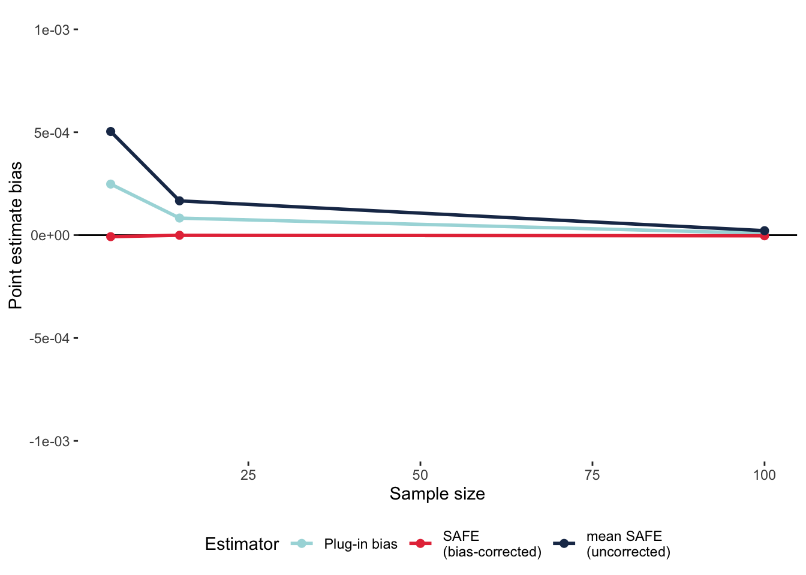
This indicates that the least biased estimator is the first order definition formula (light blue). SAFE (red) and the 2nd order plugin (navy blue) perform similarly. These bias values are incredibly small, indicating that all options are fair, except for at low sample sizes, when the first-order definition formula is quite biased.
Sampling variance bias
Interestingly, there is no way to know the ‘true’ estimand for sampling variance because we typically only have one finite sample from a population. To calculate bias for our sampling variance estimates, we actually calculate the variance in point estimates for each estimator and use each of these as the estimand. With 3 estimators, and thus 3 estimands, we’ll thus end up with 9 calculations of bias.
To understand how well our approximation is performing for sampling variance, we typically calculate relative bias by calculating bias as above but then dividing by the estimand and multiplying by 100.
# First, calculate variance in point estimates as our 'estimand'
res[, var_estimand_1st := var(sim_y_plugin_1st),
by = .(scenario_id)]
res[, var_estimand_2nd := var(sim_y_plugin_2nd),
by = .(scenario_id)]
res[, var_estimand_SAFE := var(yi_safe),
by = .(scenario_id)]
# To make this easier to read, we'll encapsulate the relative bias in a function:
relative_bias <- function(estimates,
estimand){
return(((mean(estimates) - unique(estimand)) / estimand) * 100)
}
# Now summarize and calculate relative bias per scenario ID
var.bias <- res[, .(SAFE_estimate.1st_estimand = relative_bias(vi_safe, var_estimand_1st),
SAFE_estimate.2nd_estimand = relative_bias(vi_safe, var_estimand_2nd),
SAFE_estimate.SAFE_estimand = relative_bias(vi_safe, var_estimand_SAFE),
plugin_1st_estimate.1st_estimand = relative_bias(sim_v_plugin_1st, var_estimand_1st),
plugin_1st_estimate.2nd_estimand = relative_bias(sim_v_plugin_1st, var_estimand_2nd),
plugin_1st_estimate.SAFE_estimand = relative_bias(sim_v_plugin_1st, var_estimand_SAFE),
plugin_2nd_estimate.1st_estimand = relative_bias(sim_v_plugin_2nd, var_estimand_1st),
plugin_2nd_estimate.2nd_estimand = relative_bias(sim_v_plugin_2nd, var_estimand_2nd),
plugin_2nd_estimate.SAFE_estimand = relative_bias(sim_v_plugin_2nd, var_estimand_SAFE)),
by = .(scenario_id, sample_size1, sample_size2)] |> unique()
# Now melt:
var.bias.long <- melt(var.bias,
id.vars = c("scenario_id", "sample_size1", "sample_size2"))
head(var.bias.long) scenario_id sample_size1 sample_size2 variable
<char> <num> <num> <fctr>
1: lnRoM_scenario_4 5 5 SAFE_estimate.1st_estimand
2: lnRoM_scenario_10 10 10 SAFE_estimate.1st_estimand
3: lnRoM_scenario_16 50 50 SAFE_estimate.1st_estimand
4: lnRoM_scenario_22 100 100 SAFE_estimate.1st_estimand
5: lnRoM_scenario_28 150 150 SAFE_estimate.1st_estimand
6: lnRoM_scenario_4 5 5 SAFE_estimate.2nd_estimand
value
<num>
1: 12.2824838
2: 3.5304146
3: 0.1791294
4: 0.5912706
5: 0.3287710
6: 16.6524224# Split the 'variable' into estimator and estimand for plotting
var.bias.long[, c("Estimator", "Estimand") := tstrsplit(variable, ".", fixed = TRUE)]
# Sort the dataset by sample size
setorder(var.bias.long, sample_size1)
# Plot
ggplot(data = var.bias.long[sample_size1 == sample_size2, ],
aes(x = sample_size1, y = value, color = Estimator))+
geom_path(linewidth = 1)+
geom_hline(yintercept = 0)+
xlab("Sample size")+
ylab("Relative bias (%)")+
scale_color_manual("Estimator",
labels = c("plugin_1st_estimate" = "1st order plugin\n(definition formula)",
"plugin_2nd_estimate" = "2nd order plugin\n(bias-corrected formula)",
"SAFE_estimate" = "SAFE bootstrapping"),
values = c("plugin_1st_estimate" = "#A8DADC",
"plugin_2nd_estimate" = "#1D3557",
"SAFE_estimate" = "#E63946"))+
facet_wrap(~Estimand,
ncol = 1,
labeller = as_labeller(c("1st_estimand" = "1st order plugin estimand\n(definition formula)",
"2nd_estimand" = "2nd order plugin estimand",
"SAFE_estimand" = "SAFE estimand")))+
theme_bw()+
theme(panel.border = element_blank(),
panel.grid = element_blank(),
strip.background = element_blank(),
legend.position = "bottom")
We see here that SAFE (red) is slightly more biased, but in a conservative direction, than the other estimators.
Plot all simulations results
Now let’s look at the rest of the simulation results.
sim_results <- readRDS("builds/all_scenarios_summarized.Rds")
sim_results <- sim_results[boots == 1e6, ]Speed
This was our dummy effect size in the beginning. How do the point and variance estimates calculated by SAFE compare to just calculating 1 / x for point estimates?
We compared the variance estimates from SAFE to variance estimates produced by a 1st-order derivative sampling variance formula derived with the delta method (denoted as 1st order plugin here). Let’s see which did better!
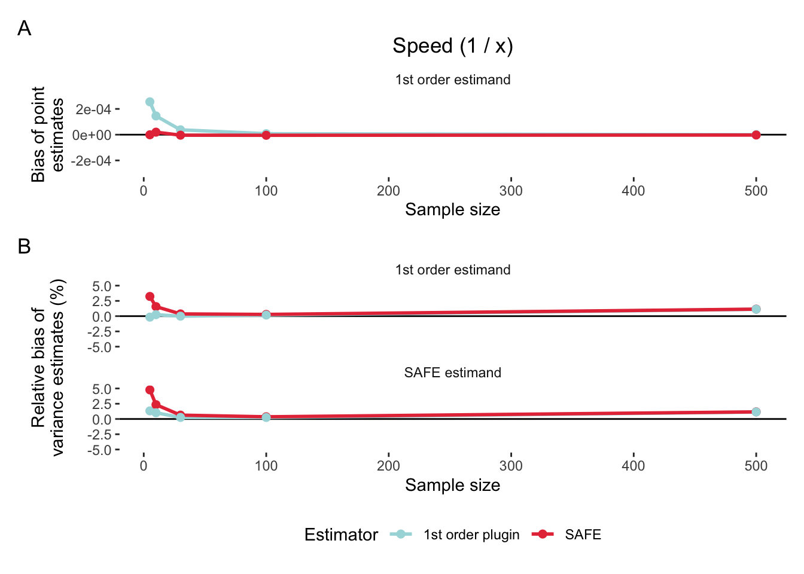
SMD 4 multivariate normal
The SAFE estimator for this effect size was calculated with 4 multivariate normal distributions for both mean and SD, as both of these parameters are in the definition formula (Cohen’s d) of SMD. Let’s compare the bias of SAFE, Cohen’s d, and Hedges’ g.
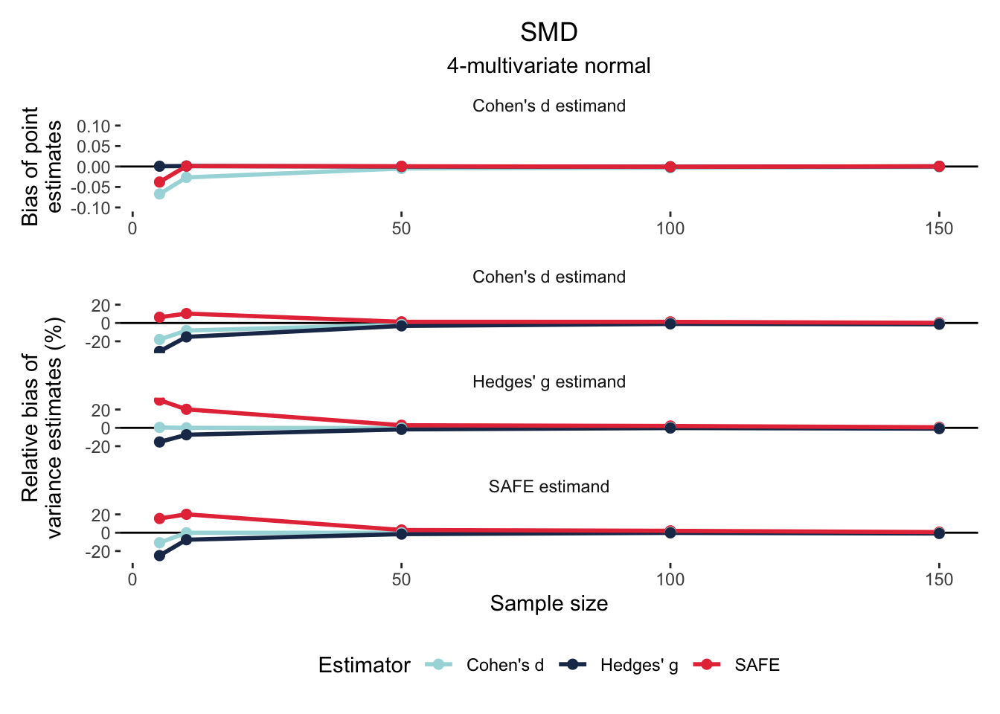
SMD 2 multivariate normal and 2-Wishart
With this estimator, the SAFE calculation used the normal distribution to simulate the two means but the Wishart distribution to estimate the SD.
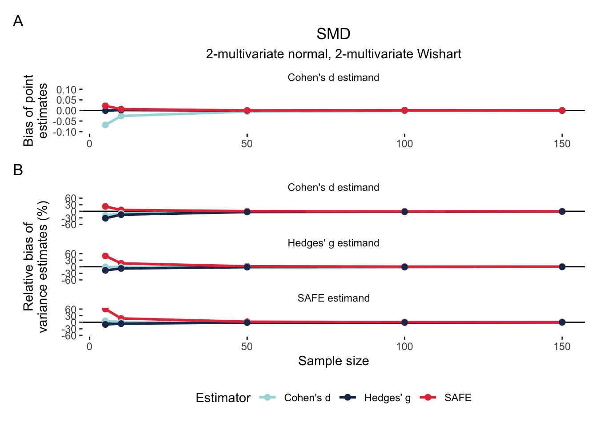
lnCVR 4 multivariate normal
The SAFE estimator for this effect size was calculated with 4 multivariate normal distributions for both mean and SD.
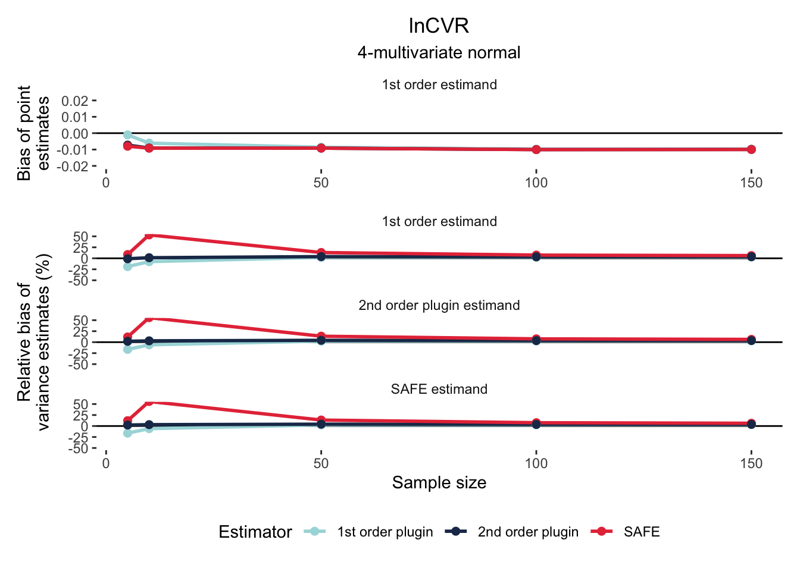
lnCVR 2 multivariate normal and 2-Wishart
The SAFE estimator for this effect size was calculated with 2 multivariate normal distributions for the means and 2 Wishart distributions for the SD.
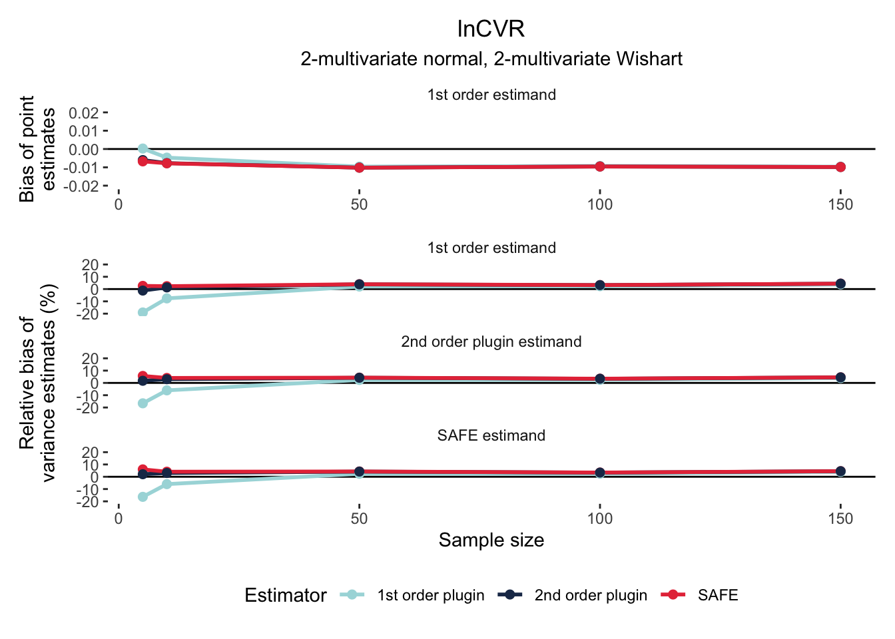
Log Odds Ratio (lnOR)
In this effect size estimation, the SAFE calculation used a binomial distribution to draw random binomial samples for ‘a’ and ‘c’.

Log Risk Ratio (lnRR)
In this effect size estimation, the SAFE calculation drew ‘a’ and ‘c’ from a binomial distribution.
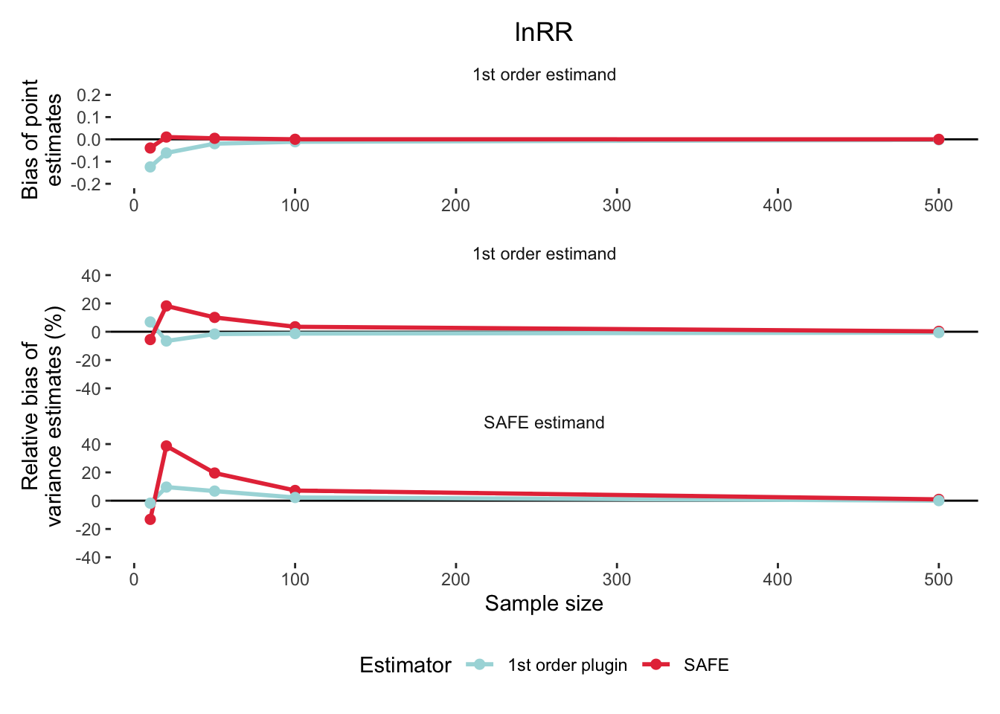
Hardy Weinberg Disequilibrium
In this effect size estimation, the SAFE calculation drew ‘n_AA’, ‘n_Aa’, and ‘n_aa’ from a binomial distribution.
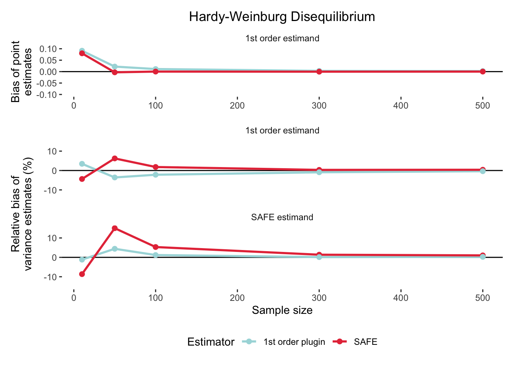
How many SAFE bootstraps?
The SAFE method relies on bootstrapping to calculate effect size point estimates and sampling variance. It’s sort of magical how well it works! But, how many bootstraps are necessary? Let’s find out by doing another Monte Carlo simulation, again of lnRoM. This time, instead of calculating bias, we’ll look at the standard deviation of the point and sampling variance estimates as we change the number of bootstraps.
Let’s choose two bootstrap lengths: 100 and 1,000. We’ll run a simulation 1,000 times just to make this easy. (See below for full 1e5 simulation results)
# Create some scenarios based on combinations of sample size and boot-length
scenario <- CJ(true_mean1 = 13.4, true_sd1 = 4.6,
true_mean2 = 16.1, true_sd2 = 3.9,
sample_size1 = c(5, 10, 150))
scenario[, sample_size2 := sample_size1]
scenarioKey: <true_mean1, true_sd1, true_mean2, true_sd2, sample_size1>
true_mean1 true_sd1 true_mean2 true_sd2 sample_size1 sample_size2
<num> <num> <num> <num> <num> <num>
1: 13.4 4.6 16.1 3.9 5 5
2: 13.4 4.6 16.1 3.9 10 10
3: 13.4 4.6 16.1 3.9 150 150Now let’s run this in a foreach loop. If you’d rather not run this on your machine, if run == FALSE, the code will just load the already finished simulation. Note that in this simulation, we’re evaluating SAFE estimates using only the ‘true’ values, instead of simulated data.
out <- list()
sub_scenario <- c()
N <- 1000
res <- list()
clust_out <- prepare_cluster(n = N)
res <- foreach(i = 1:N,
.options.snow = clust_out$options,
.errorhandling = "stop",
.packages = c("data.table", "MASS",
"crayon", "tmvtnorm")) %dopar% {
# Now calculate SAFE with 100 bootstraps
out[[1]] <- eff_size(x1 = scenario$true_mean1,
x2 = scenario$true_mean2,
sd1 = scenario$true_sd1,
sd2 = scenario$true_sd2,
n1 = scenario$sample_size1,
n2 = scenario$sample_size2,
effect_type = "lnRoM",
SAFE = TRUE,
verbose = FALSE,
parallelize = FALSE,
SAFE_boots = 100)
out[[1]] <- data.table(out[[1]],
sample_size = scenario$sample_size1,
boots = 100)
out[[1]]
# Now with 1000 bootstraps
out[[2]] <- eff_size(x1 = scenario$true_mean1,
x2 = scenario$true_mean2,
sd1 = scenario$true_sd1,
sd2 = scenario$true_sd2,
n1 = scenario$sample_size1,
n2 = scenario$sample_size2,
effect_type = "lnRoM",
SAFE = TRUE,
verbose = FALSE,
parallelize = FALSE,
SAFE_boots = 1000)
out[[2]] <- data.table(out[[2]],
sample_size = scenario$sample_size1,
boots = 1000)
out[[2]]
return(rbindlist(out))
}
stopCluster(clust_out$clust)
res.dt <- rbindlist(res)
saveRDS(res.dt, "builds/dummy_bootstrap_simulation.Rds")Let’s look at the dispersion of the SAFE estimates as a function of sample size and bootstrap length.
head(res.dt) yi_first yi_second vi_first vi_second yi_safe vi_safe
<num> <num> <num> <num> <num> <num>
1: -0.1835646 -0.1776480 0.035304382 0.035650987 -0.1650154 0.035516549
2: -0.1835646 -0.1806063 0.017652191 0.017738842 -0.1807932 0.014147118
3: -0.1835646 -0.1833673 0.001176813 0.001177198 -0.1823932 0.001335037
4: -0.1835646 -0.1776480 0.035304382 0.035650987 -0.1771216 0.033641955
5: -0.1835646 -0.1806063 0.017652191 0.017738842 -0.1819732 0.017039825
6: -0.1835646 -0.1833673 0.001176813 0.001177198 -0.1827143 0.001237149
SE_safe sample_size boots
<num> <num> <num>
1: 0.18845835 5 100
2: 0.11894166 10 100
3: 0.03653816 150 100
4: 0.18341743 5 1000
5: 0.13053668 10 1000
6: 0.03517312 150 1000# First, the point estimates:
ggplot(data = res.dt,
aes(x = as.factor(sample_size), y = yi_safe,
fill = boots,
group = interaction(sample_size, boots)))+
geom_jitter(alpha = .5, shape = 21,
position = position_jitterdodge(dodge.width = 1))+
geom_violin(position = position_dodge(width = 1))+
ylab("SAFE Point Estimate")+
xlab("Scenario sample size")+
scale_fill_scico("Number of SAFE bootstraps",
palette = "hawaii")+
theme_bw()+
theme(panel.border = element_blank(),
panel.grid = element_blank(),
strip.background = element_blank(),
legend.position = "bottom")
Now let’s look at the sampling variance estimates:
ggplot(data = res.dt,
aes(x = as.factor(sample_size), y = vi_safe,
fill = boots,
group = interaction(sample_size, boots)))+
geom_jitter(alpha = .5, shape = 21,
position = position_jitterdodge(dodge.width = 1))+
geom_violin(position = position_dodge(width = 1))+
ylab("SAFE Variance Estimate")+
xlab("Scenario sample size")+
scale_fill_scico("Number of SAFE bootstraps",
palette = "hawaii")+
theme_bw()+
theme(panel.border = element_blank(),
panel.grid = element_blank(),
strip.background = element_blank(),
legend.position = "bottom")
It looks like the dispersion in estimates is shaped by number of SAFE bootstraps and improves considerably with 1,000 bootstraps, especially at low sample sizes. Another way to visualize this (which we’ll use below in the proper 1e5 simulations) is to plot the standard deviation.
res.summary <- res.dt[, .(sd_point_estimate = sd(yi_safe),
sd_variance_estimate = sd(vi_safe)),
by = .(sample_size, boots)]
res.summary sample_size boots sd_point_estimate sd_variance_estimate
<num> <num> <num> <num>
1: 5 100 0.020121458 5.480685e-03
2: 10 100 0.013661173 2.603266e-03
3: 150 100 0.003381441 1.651428e-04
4: 5 1000 0.005940034 1.862273e-03
5: 10 1000 0.004276895 8.471993e-04
6: 150 1000 0.001107589 5.273536e-05# Let's melt this to make a single plot:
res.summary.mlt <- melt(res.summary,
id.vars = c("sample_size", "boots"))
res.summary.mlt sample_size boots variable value
<num> <num> <fctr> <num>
1: 5 100 sd_point_estimate 2.012146e-02
2: 10 100 sd_point_estimate 1.366117e-02
3: 150 100 sd_point_estimate 3.381441e-03
4: 5 1000 sd_point_estimate 5.940034e-03
5: 10 1000 sd_point_estimate 4.276895e-03
6: 150 1000 sd_point_estimate 1.107589e-03
7: 5 100 sd_variance_estimate 5.480685e-03
8: 10 100 sd_variance_estimate 2.603266e-03
9: 150 100 sd_variance_estimate 1.651428e-04
10: 5 1000 sd_variance_estimate 1.862273e-03
11: 10 1000 sd_variance_estimate 8.471993e-04
12: 150 1000 sd_variance_estimate 5.273536e-05setorder(res.summary.mlt, boots)
ggplot(data = res.summary.mlt,
aes(x = boots, y = value, color = sample_size,
group = interaction(sample_size)))+
geom_path()+
geom_point(size = pt_size)+
facet_wrap(~variable,
scales = "free_y",
labeller = as_labeller(c("sd_point_estimate" = "Point estimate",
"sd_variance_estimate" = "Variance estimate")))+
scale_color_scico("Scenario sample size",
palette = "hawaii")+
xlab("SAFE bootstrap length")+
ylab("Standard deviation of estimate")+
theme_bw()+
theme(panel.border = element_blank(),
panel.grid = element_blank(),
strip.background = element_blank(),
legend.position = "bottom")
Bootstrap scenario results
Now let’s look at the full Monte Carlo simulation results for the influence of bootstrap length.
sim_results <- readRDS("builds/all_scenarios_summarized.Rds")
sim_results <- sim_results[calculation == "SD", ]Speed
Once again, here’s our novel effect size ‘speed’, 1 / x. How do our SAFE estimates of speed and its sampling variance change as we changed the number of bootstraps?

SMD 4-multivariate normal

SMD 2-multivariate normal and 2-Wishart
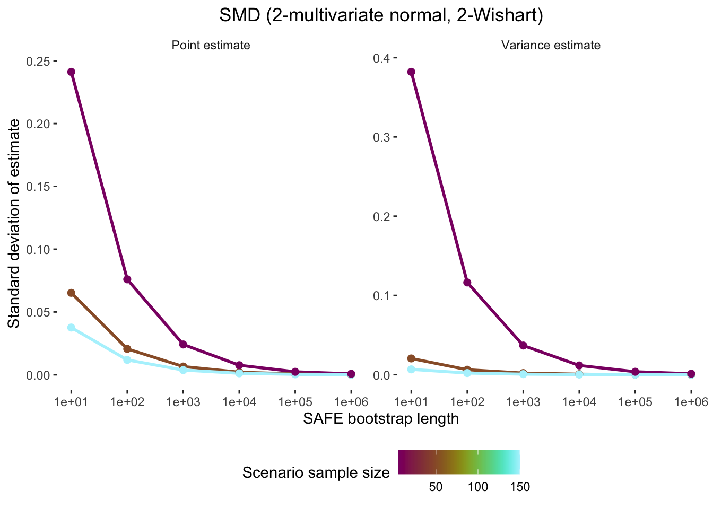
lnCVR 4-multivariate normal
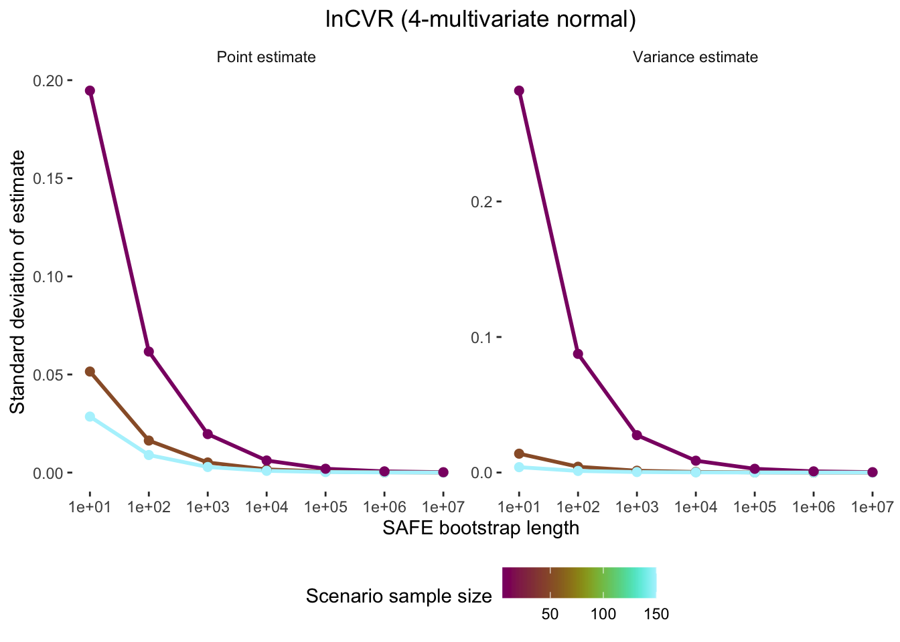
lnCVR 2-multivariate normal and 2-Wishart
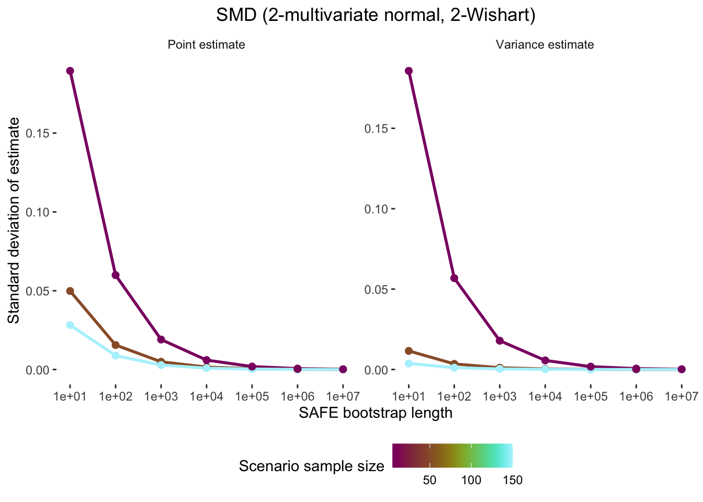
Log Odds Ratio (lnOR)
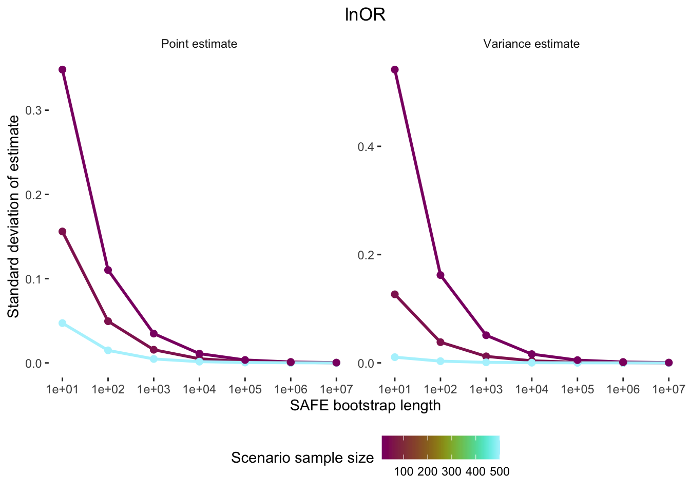
Log Risk Ratio (lnRR)
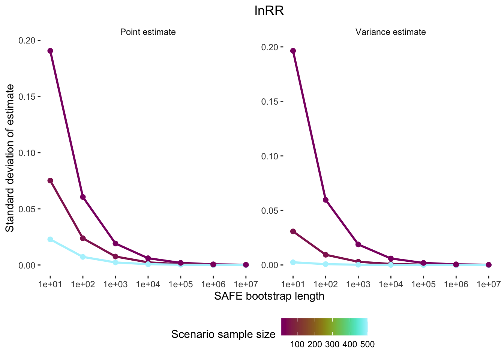
Hardy Weinberg Disequilibrium
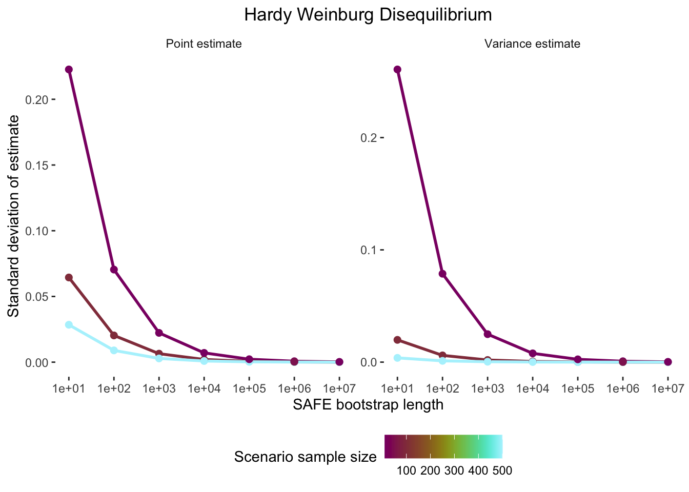
Conclusion
SAFE bootstrapping is a remarkably simple way to calculate bias-corrected point estimates and sampling variances for meta-analyses. Based on our simulations, this method performs similarly to plugin estimates and requires only 1e5 (though 1e6 is marginally better) bootstraps. SAFE allows researchers to calculate sampling variance for custom effect sizes with only minimal statistical knowledge (and without spooky derivatives).
References
Havird, Justin C, Jennifer L Neuwald, Alisha A Shah, Alexander Mauro, Craig A Marshall, and Cameron K Ghalambor. 2020. “Distinguishing Between Active Plasticity Due to Thermal Acclimation and Passive Plasticity Due to Q10 Effects: Why Methodology Matters.” Functional Ecology 34 (5): 1015–28.